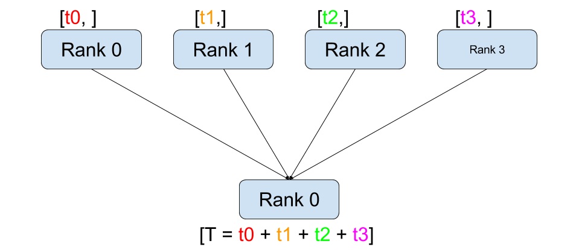
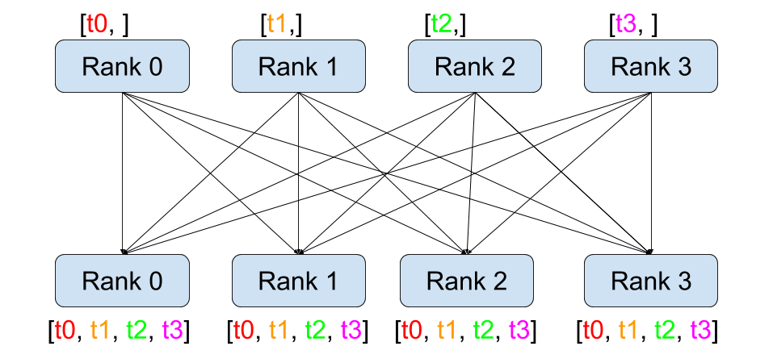

使用PyTorch编写分布式应用程序
译者：firdameng
在这个简短的教程中，我们将讨论PyTorch的分布式软件包。 我们将看到如何设置分布式设置，使用不同的通信策略，并查看包的内部部分。
开始
PyTorch中包含的分布式软件包（即torch.distributed）使研究人员和从业人员能够轻松地跨进程和计算机集群并行化他们的计算。 为此，它利用消息传递语义，允许每个进程将数据传递给任何其他进程。 与多处理（torch.multiprocessing）包相反，进程可以使用不同的通信后端，并且不限于在同一台机器上执行。
开始我们需要能够同时运行多个进程。 如果您有权访问计算群集，则应使用本地sysadmin进行检查，或使用您喜欢的协调工具。 （例如，pdsh，clustershell或其他）为了本教程的目的，我们将使用单个机器并使用以下模板建立多个进程。
"""run.py:"""
#!/usr/bin/env python
import os
import torch
import torch.distributed as dist
from torch.multiprocessing import Process
def run(rank, size):
""" Distributed function to be implemented later. """
pass
def init_processes(rank, size, fn, backend='tcp'):
""" Initialize the distributed environment. """
os.environ['MASTER_ADDR'] = '127.0.0.1'
os.environ['MASTER_PORT'] = '29500'
dist.init_process_group(backend, rank=rank, world_size=size)
fn(rank, size)
if __name__ == "__main__":
size = 2
processes = []
for rank in range(size):
p = Process(target=init_processes, args=(rank, size, run))
p.start()
processes.append(p)
for p in processes:
p.join()
上面的脚本产生了两个进程，每个进程将设置分布式环境，初始化进程组（dist.init_process_group），最后执行给定的运行函数。
我们来看看init_processes函数。 它确保每个进程都能够使用相同的IP地址和端口通过主站进行协调。 请注意，我们使用了TCP后端，但我们可以使用MPI或Gloo。 （参见5.1节）我们将在本教程结束时讨论dist.init_process_group中产生的特效，但它实质上允许进程通过共享其位置来相互通信。
点对点通信

发送与接收
将数据从一个进程传输到另一个进程称为点对点通信。 这些是通过send和recv函数或它们的直接对应部分isend和irecv实现的。
"""Blocking point-to-point communication."""
def run(rank, size):
tensor = torch.zeros(1)
if rank == 0:
tensor += 1
# Send the tensor to process 1
dist.send(tensor=tensor, dst=1)
else:
# Receive tensor from process 0
dist.recv(tensor=tensor, src=0)
print('Rank ', rank, ' has data ', tensor[0])
在上面的例子中，两个进程都以零张量开始，然后进程0递增张量并将其发送到进程1，以便它们都以1.0结束。 请注意，进程1需要分配内存以存储它将接收的数据。
另请注意，send / recv正在阻塞：两个进程都会停止，直到通信完成。 另一方面，immediates是非阻塞的; 脚本继续执行，方法返回一个DistributedRequest对象，我们可以选择wait（）。
"""Non-blocking point-to-point communication."""
def run(rank, size):
tensor = torch.zeros(1)
req = None
if rank == 0:
tensor += 1
# Send the tensor to process 1
req = dist.isend(tensor=tensor, dst=1)
print('Rank 0 started sending')
else:
# Receive tensor from process 0
req = dist.irecv(tensor=tensor, src=0)
print('Rank 1 started receiving')
req.wait()
print('Rank ', rank, ' has data ', tensor[0])
当使用immediates时，我们必须小心使用发送和接收的张量。 由于我们不知道何时将数据传递给另一个进程，因此我们不应该在req.wait（）完成之前修改发送的张量或访问接收的张量。 换一种说法，
- 在dist.isend（）之后写入张量将导致未定义的行为。
- 在dist.irecv（）之后读取张量将导致未定义的行为。
但是，在执行req.wait（）之后，我们保证发生通信，并且存储在tensor [0]中的值为1.0。
当我们想要对流程的通信进行细粒度控制时，点对点通信非常有用。 它们可用于实现奇妙的算法，例如百度DeepSpeech或Facebook的大规模实验中使用的算法。（参见4.1节）
集体通信

Scatter

Gather

Reduce

All-Reduce

Broadcast

All_gather
与点对点通信相反，在集体中允许通信模式跨越组中所有进程。 组是我们所有进程的子集。 要创建组，我们可以将队列列表传递给dist.new_group（组）。 默认情况下，集合体在所有进程（也称为world）上执行。 例如，为了获得所有过程中所有张量的总和，我们可以使用dist.all_reduce（tensor，op，group）集合。
""" All-Reduce example."""
def run(rank, size):
""" Simple point-to-point communication. """
group = dist.new_group([0, 1])
tensor = torch.ones(1)
dist.all_reduce(tensor, op=dist.reduce_op.SUM, group=group)
print('Rank ', rank, ' has data ', tensor[0])
由于我们想要组中所有张量的总和，我们使用dist.reduce_op.SUM作为reduce运算符。 一般而言，任何可交换的数学运算都可以用作运算符。 开箱即用，PyTorch带有4个这样的运算符，所有运算符都在元素级别上运行：
dist.reduce_op.SUM,dist.reduce_op.PRODUCT,dist.reduce_op.MAX,dist.reduce_op.MIN.
除了dist.all_reduce（tensor，op，group）之外，PyTorch目前共有6个集体。
dist.broadcast(tensor, src, group): Copiestensorfromsrcto all other processes.dist.reduce(tensor, dst, op, group): Appliesopto alltensorand stores the result indst.dist.all_reduce(tensor, op, group): Same as reduce, but the result is stored in all processes.dist.scatter(tensor, src, scatter_list, group): Copies the tensorscatter_list[i]to the process.dist.gather(tensor, dst, gather_list, group): Copiestensorfrom all processes indst.dist.all_gather(tensor_list, tensor, group): Copiestensorfrom all processes totensor_list, on all processes.dist.barrier(group): block all processes ingroupuntil each one has entered this function.
分布式训练
注意：您可以在此GitHub存储库中找到此部分的 示例脚本
现在我们已经了解了分布式模块的工作原理，让我们编写一些有用的东西。 我们的目标是复制DistributedDataParallel的功能。 当然，这将是一个教学示例，在现实世界中，您应该使用上面链接的官方，经过良好测试和优化的版本。
很简单，我们想要实现随机梯度下降的分布式版本。 我们的脚本将允许所有进程在其批量数据上计算其模型的梯度，然后平均其渐变。 为了在更改进程数时确保类似的收敛结果，我们首先必须对数据集进行分区。 （您也可以使用tnt.dataset.SplitDataset，而不是下面的代码段。）
""" Dataset partitioning helper """
class Partition(object):
def __init__(self, data, index):
self.data = data
self.index = index
def __len__(self):
return len(self.index)
def __getitem__(self, index):
data_idx = self.index[index]
return self.data[data_idx]
class DataPartitioner(object):
def __init__(self, data, sizes=[0.7, 0.2, 0.1], seed=1234):
self.data = data
self.partitions = []
rng = Random()
rng.seed(seed)
data_len = len(data)
indexes = [x for x in range(0, data_len)]
rng.shuffle(indexes)
for frac in sizes:
part_len = int(frac * data_len)
self.partitions.append(indexes[0:part_len])
indexes = indexes[part_len:]
def use(self, partition):
return Partition(self.data, self.partitions[partition])
通过上面的代码片段，我们现在可以使用以下几行简单地对任何数据集进行分区：
""" Partitioning MNIST """
def partition_dataset():
dataset = datasets.MNIST('./data', train=True, download=True,
transform=transforms.Compose([
transforms.ToTensor(),
transforms.Normalize((0.1307,), (0.3081,))
]))
size = dist.get_world_size()
bsz = 128 / float(size)
partition_sizes = [1.0 / size for _ in range(size)]
partition = DataPartitioner(dataset, partition_sizes)
partition = partition.use(dist.get_rank())
train_set = torch.utils.data.DataLoader(partition,
batch_size=bsz,
shuffle=True)
return train_set, bsz
假设我们有2个副本，那么每个进程将具有60000/2 = 30000个样本的train_set。 我们还将批量大小除以副本数量，以保持总批量大小为128。
我们现在可以编写我们通常的前向后向优化训练代码，并添加一个函数调用来平均我们模型的渐变。 （以下内容主要来自官方的PyTorch MNIST示例。）
""" Distributed Synchronous SGD Example """
def run(rank, size):
torch.manual_seed(1234)
train_set, bsz = partition_dataset()
model = Net()
optimizer = optim.SGD(model.parameters(),
lr=0.01, momentum=0.5)
num_batches = ceil(len(train_set.dataset) / float(bsz))
for epoch in range(10):
epoch_loss = 0.0
for data, target in train_set:
optimizer.zero_grad()
output = model(data)
loss = F.nll_loss(output, target)
epoch_loss += loss.item()
loss.backward()
average_gradients(model)
optimizer.step()
print('Rank ', dist.get_rank(), ', epoch ',
epoch, ': ', epoch_loss / num_batches)
它仍然是实现average_gradients（模型）函数，它只是简单地接受一个模型并在整个空间中平均其渐变。
""" Gradient averaging. """
def average_gradients(model):
size = float(dist.get_world_size())
for param in model.parameters():
dist.all_reduce(param.grad.data, op=dist.reduce_op.SUM)
param.grad.data /= size
我们成功实现了分布式同步SGD，可以在大型计算机集群上训练任何模型。
注意：虽然最后一句在技术上是正确的，但实现同步SGD的生产级实现需要更多技巧。 再次，使用已经过测试和优化的内容。
自定义Ring-Allreduce
作为一个额外的挑战，想象一下我们想要实现DeepSpeech的高效环allreduce。 使用点对点集合相当容易实现。
""" Implementation of a ring-reduce with addition. """
def allreduce(send, recv):
rank = dist.get_rank()
size = dist.get_world_size()
send_buff = th.zeros(send.size())
recv_buff = th.zeros(send.size())
accum = th.zeros(send.size())
accum[:] = send[:]
left = ((rank - 1) + size) % size
right = (rank + 1) % size
for i in range(size - 1):
if i % 2 == 0:
# Send send_buff
send_req = dist.isend(send_buff, right)
dist.recv(recv_buff, left)
accum[:] += recv[:]
else:
# Send recv_buff
send_req = dist.isend(recv_buff, right)
dist.recv(send_buff, left)
accum[:] += send[:]
send_req.wait()
recv[:] = accum[:]
在上面的脚本中，allreduce（send，recv）函数的签名与PyTorch中的签名略有不同。 它需要一个recv张量，并将所有发送张量的总和存储在其中。 作为练习留给读者，我们的版本和DeepSpeech中的版本之间仍然存在一个区别：它们的实现将梯度张量划分为块，以便最佳地利用通信带宽。 （提示：torch.chunk）
高级主题
我们现在准备发现torch.distributed的一些更高级的功能。 由于有很多内容需要介绍，本节分为两个小节：
- 通信后端：我们学习如何使用MPI和Gloo进行GPU-GPU通信。
- 初始化方法：我们了解如何在dist.init_process_group（）中最好地设置初始协调阶段。
通信后端
torch.distributed最优雅的方面之一是它能够在不同的后端之上进行抽象和构建。 如前所述，目前在PyTorch中实现了三个后端：TCP，MPI和Gloo。 根据所需的用例，它们各自具有不同的规格和权衡。 可以在此处找到支持功能的比较表。 请注意，自本教程创建以来，已添加第四个后端NCCL。 有关其使用和值的更多信息，请参阅torch.distributed docs的此部分。
TCP后端
到目前为止，我们已广泛使用TCP后端。 它作为一个开发平台非常方便，因为它可以保证在大多数机器和操作系统上运行。 它还支持CPU上的所有点对点和集合功能。 但是，不支持GPU，并且其通信例程不像MPI那样优化。
Gloo后端
Gloo后端为CPU和GPU提供了集体通信程序的优化实现。 它特别适用于GPU，因为它可以执行通信而无需使用GPUDirect将数据传输到CPU的内存。 它还能够使用NCCL执行快速的节点内通信，并实现其自己的节点间例程算法。
从版本0.2.0开始，Gloo后端自动包含在PyTorch的预编译二进制文件中。 正如您已经注意到的那样，如果您将模型放在GPU上，我们的分布式SGD示例将不起作用。 让我们通过首先替换init_processes中的backend ='gloo'来修复它（rank，size，fn，backend ='tcp'）。 此时，脚本仍将在CPU上运行，但在幕后使用Gloo后端。 为了使用多个GPU，我们还要进行以下修改：
init_processes(rank, size, fn, backend='tcp')init_processes(rank, size, fn, backend='gloo')- Use
device = torch.device("cuda:{}".format(rank)) model = Net()model = Net().to(device)- Use
data, target = data.to(device), target.to(device)
通过上述修改，我们的模型现在在两个GPU上进行培训，您可以通过运行nvidia-smi监控它们的使用情况。
MPI后端
消息传递接口（MPI）是高性能计算领域的标准化工具。 它允许进行点对点和集体通信，并且是torch.distributed的API的主要灵感。 存在MPI的若干实现（例如，Open-MPI，MVAPICH2，Intel MPI），每个实现针对不同目的而优化。 使用MPI后端的优势在于MPI在大型计算机集群上的广泛可用性和高级优化。 最近的一些实现也能够利用CUDA IPC和GPU Direct技术，以避免通过CPU进行内存复制。
不幸的是，PyTorch的二进制文件不能包含MPI实现，我们必须手动重新编译它。 幸运的是，这个过程非常简单，因为在编译时，PyTorch会自行查看可用的MPI实现。 以下步骤通过从源安装PyTorch来安装MPI后端。
- 创建并激活您的Anaconda环境，按照指南安装所有先决条件，但不要运行python setup.py install。
- 选择并安装您最喜欢的MPI实现。 请注意，启用支持CUDA的MPI可能需要一些额外的步骤。 在我们的例子中，我们将坚持不支持GPU的Open-MPI：conda install -c conda-forge openmpi
- 现在，转到克隆的PyTorch repo并执行python setup.py install。
为了测试我们新安装的后端，需要进行一些修改。
- 使用initprocesses（0,0，run，backend ='mpi'）替换if name =='_ main'下的内容：
- 运行mpirun -n 4 python myscript.py。
这些更改的原因是MPI需要在生成流程之前创建自己的环境。 MPI还将生成自己的进程并执行初始化方法中描述的握手，使得init_process_group的rankand size参数变得多余。 这实际上非常强大，因为您可以将其他参数传递给mpirun，以便为每个进程定制计算资源。 （例如每个进程的内核数量，将机器分配给特定的等级，以及更多内容）这样做，您应该获得与其他通信后端相同的熟悉输出。
初始化方法
为了完成本教程，我们来谈谈我们调用的第一个函数：dist.init_process_group（backend，init_method）。 特别是，我们将讨论不同的初始化方法，这些方法负责每个进程之间的初始协调步骤。 这些方法允许您定义如何完成此协调。 根据您的硬件设置，其中一种方法应该比其他方法更合适。 除了以下部分，您还应该查看官方文档。
在深入研究初始化方法之前，让我们从C / C ++的角度快速了解init_process_group背后的情况。
首先，解析和验证参数。
后端通过name2channel.at（）函数解析。 返回Channel类，将用于执行数据传输。
GIL被删除，并调用THDProcessGroupInit（）。 这会实例化通道并添加主节点的地址。
等级0的过程将执行主过程，而所有其他等级将是工作进程。
主进程
（1）为所有工作进程创建套接字。 （2）等待所有工作进程连接。 （3）向他们发送有关其他进程位置的信息。
每个工作进程
（1）为主进程创建一个套接字。 （2）发送自己的位置信息。 （3）接收有关其他工作进程的信息。 （4）打开套接字并与所有其他工作进程握手。
- 初始化完成，每个进程都相互建立连接。
环境变量
在本教程中，我们一直在使用环境变量初始化方法。 通过在所有计算机上设置以下四个环境变量，所有进程都能够正确连接到主进程，获取有关其他进程的信息，最后与它们握手。
- MASTER_PORT：计算机上的一个空闲端口，用于承载排名为0的进程。
- MASTER_ADDR：将以0级托管进程的计算机的IP地址。
- WORLD_SIZE：进程总数，以便master知道要等待多少worker。
- RANK：每个流程的等级，因此他们将知道它是否是worker的master。
共享文件系统
共享文件系统要求所有进程都可以访问共享文件系统，并通过共享文件协调它们。 这意味着每个进程都将打开文件，写入其信息，并等到每个人都这样做。 在所有必需信息将随时可用于所有流程之后。 为了避免竞争条件，文件系统必须支持通过fcntl锁定。 请注意，您可以手动指定排名，也可以让流程自行计算。 要为每个作业定义一个唯一的组名，您可以为多个作业使用相同的文件路径并安全地避免冲突。
dist.init_process_group(init_method='file:///mnt/nfs/sharedfile', world_size=4,
group_name='mygroup')
TCP初始化和多播
通过TCP初始化可以通过两种不同的方式实现：
- 通过提供具有等级0和世界大小的进程的IP地址。
- 通过提供任何有效的IP多播地址和世界大小。
在第一种情况下，所有工作进程将能够连接到等级为0的进程并按照上述步骤进行操作。
dist.init_process_group(init_method='tcp://10.1.1.20:23456', rank=args.rank, world_size=4)
在第二种情况下，多播地址指定可能处于活动状态的节点组，并且可以通过允许每个进程在执行上述过程之前进行初始握手来处理协调。 此外，TCP多播初始化还支持group_name参数（与共享文件方法一样），允许在同一群集上调度多个作业。
dist.init_process_group(init_method='tcp://[ff15:1e18:5d4c:4cf0:d02d:b659:53ba:b0a7]:23456',
world_size=4)
致谢
我要感谢PyTorch开发人员在他们的实现，文档和测试方面做得很好。 当代码不清楚时，我总是可以依靠文档或测试来找到答案。 特别是，我要感谢Soumith Chintala，Adam Paszke和Natalia Gimelshein提供有见地的评论并回答有关早期草稿的问题。